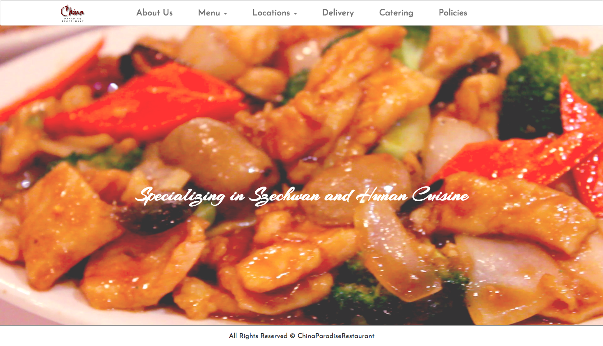
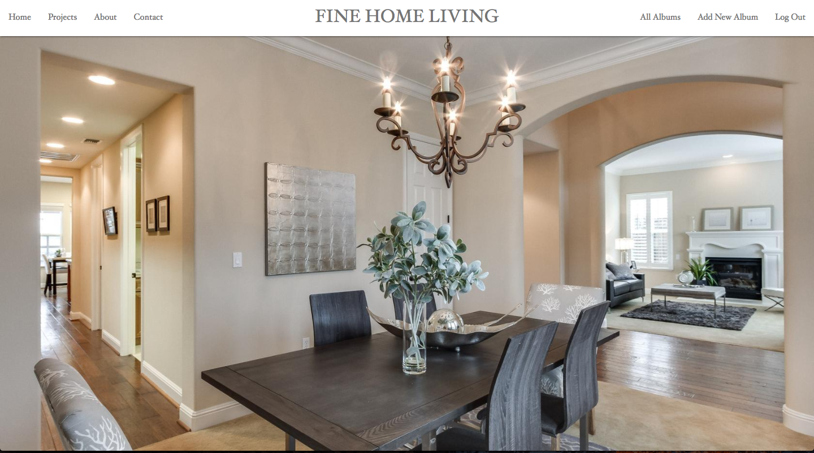
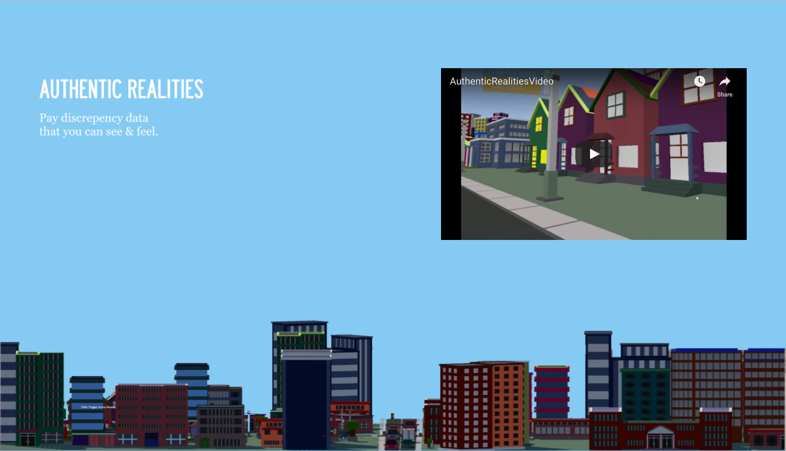
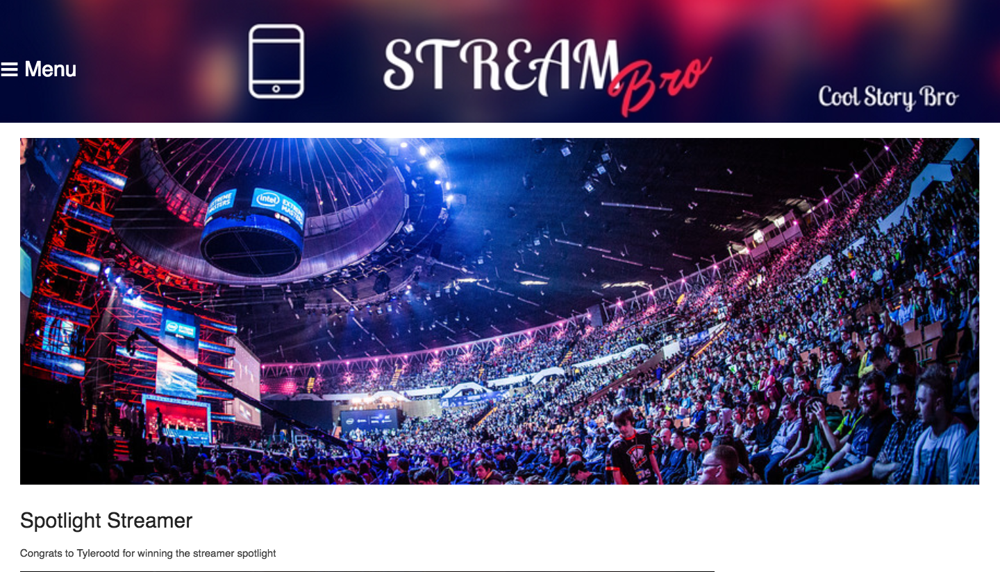
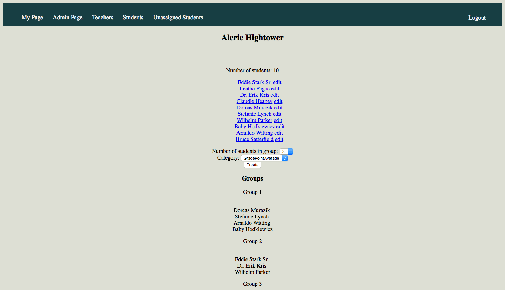

What people would say about me:
A collaborative, thoughtful Web Developer with a background in client relations and finance. Passionate about community building and deployment of solutions that drive business in a user friendly fashion.
Projects

China Paradise Restaurant
A web application platform for China Paradise. A single/multi page option that is custimizable for the admin user. Built with a React.js Front End and Rails-Api Back End. Utilizes Google Api for navigation and PostgreSQL for menu item manipulation.

Fine Home Living
A web portfolio platform for Fine Home Living. Utilizes PostgreSQL to store projects and create albums to showcase finished projects. A contemporary look was engraved on the website to make it more elegant and luxurious. Each room has been highlighted to show the effects of hiring a staging company for a new home sale.

Authentic Realities
Data visualization using virtual reality to express data/statistics. Created the 360 virtual reality environment, the statistical video, and helped with coding and listening to the triggering events of collision. Data visualization is relatively new and this was a way to show the potential power of it.

STREAMBRO
A stream hosting website that is more user friendly to watch streams in a more centralized page. Developed the frontend and backend components to the website. The subscription model and the stream view feature was implemented to make a user’s experience more convenient.

Teacher/Student Management Tool
Admin system to store student data and generate student groups based on criteria like GPA, gender, and attendance. Formulated all the teacher routes and the algorithms to sort the students by a criteria. This tool is useful for teachers that have a hard time forming groups of their students.
{kind=link}
{kind=link}
{kind=link}
{kind=link}
{kind=link}